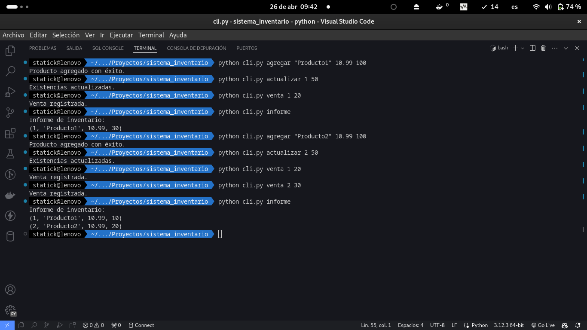

Proyecto de Sistema de Gestión de Inventarios con Python

En este tutorial, aprenderás a desarrollar un proyecto de Sistema de Gestión de Inventarios utilizando el lenguaje de programación Python.
Un sistema de gestión de inventarios es una herramienta que permite realizar un seguimiento y control de los productos o artículos almacenados en un negocio o empresa.
Algunas de las funcionalidades que implementaremos incluyen:
Registro de productos: Aprenderás a crear una estructura de datos para almacenar la información de los productos, como su nombre, descripción, precio, cantidad disponible, etc. También aprenderás a agregar nuevos productos al sistema.
Búsqueda y filtrado de productos: Te enseñaré cómo implementar funciones de búsqueda y filtrado para encontrar productos específicos en base a diferentes criterios, como el nombre, la categoría o el precio.
Actualización de inventario: Aprenderás a manejar las actualizaciones de inventario, como la compra o venta de productos. Implementaremos funciones que permitan aumentar o disminuir la cantidad disponible de un producto y mantener un registro de estas transacciones.
Generación de informes: Te mostraré cómo generar informes sobre el estado del inventario, como la lista de productos disponibles, los productos más vendidos, los productos con bajo stock, etc. Utilizaremos técnicas de manipulación de datos y generación de informes para presentar esta información de manera clara y concisa.
A medida que avancemos en el tutorial, también aprenderás buenas prácticas de programación, como la modularidad, la reutilización de código y la implementación de pruebas unitarias para garantizar la calidad y robustez de tu sistema de gestión de inventarios.
¡Prepárate para sumergirte en el emocionante mundo de la programación y desarrollar tu propio Sistema de Gestión de Inventarios con Python!
Paso 1: Diseño del Modelo de Datos
Abre tu editor de texto o IDE favorito y crea un archivo llamado inventario.sql.
Define la estructura de la base de datos SQLite. Agrega el siguiente código:
-- Crear la tabla 'productos' para almacenar la información de los productos
CREATE TABLE productos (
id INTEGER PRIMARY KEY,
nombre TEXT NOT NULL,
precio REAL NOT NULL,
existencias INTEGER NOT NULL
);Este código crea una tabla llamada productos con los campos id, nombre, precio y existencias.
Se recomienda instalar el Plugin SQLite Viewer en Visual Studio Code para poder visualizar la base de datos SQLite.
Paso 2: Desarrollo de la Lógica del Negocio
Crea un archivo llamado logica.py para escribir la lógica del negocio.
Define las funciones necesarias para agregar productos, actualizar existencias, registrar ventas y generar informes.
Agrega el siguiente código:
import sqlite3
def conectar():
# Función para establecer conexión a la base de datos
conn = sqlite3.connect('inventario.db')
return conn
def agregar_producto(nombre, precio, existencias):
# Función para agregar un nuevo producto a la base de datos
conn = conectar()
cursor = conn.cursor()
cursor.execute("INSERT INTO productos (nombre, precio, existencias) VALUES (?, ?, ?)", (nombre, precio, existencias))
conn.commit()
conn.close()
def actualizar_existencias(id_producto, nuevas_existencias):
# Función para actualizar las existencias de un producto en la base de datos
conn = conectar()
cursor = conn.cursor()
cursor.execute("UPDATE productos SET existencias = ? WHERE id = ?", (nuevas_existencias, id_producto))
conn.commit()
conn.close()
def registrar_venta(id_producto, cantidad_vendida):
# Función para registrar una venta y actualizar las existencias en la base de datos
conn = conectar()
cursor = conn.cursor()
cursor.execute("SELECT existencias FROM productos WHERE id = ?", (id_producto,))
existencias_actuales = cursor.fetchone()[0]
nuevas_existencias = existencias_actuales - cantidad_vendida
actualizar_existencias(id_producto, nuevas_existencias)
conn.close()
def generar_informe():
# Función para generar un informe de inventario
conn = conectar()
cursor = conn.cursor()
cursor.execute("SELECT * FROM productos")
productos = cursor.fetchall()
conn.close()
return productos:::{.justify} ## Paso 3: Interfaz de Línea de Comandos (CLI)
Crea un archivo llamado cli.py para desarrollar la interfaz de línea de comandos.
Utiliza la biblioteca argparse para crear una interfaz fácil de usar.
Agrega el siguiente código:
import argparse
import logica
def agregar_producto(args):
logica.agregar_producto(args.nombre, args.precio, args.existencias)
print("Producto agregado con éxito.")
def actualizar_existencias(args):
logica.actualizar_existencias(args.id, args.existencias)
print("Existencias actualizadas.")
def registrar_venta(args):
logica.registrar_venta(args.id, args.cantidad)
print("Venta registrada.")
def generar_informe(args):
productos = logica.generar_informe()
print("Informe de inventario:")
for producto in productos:
print(producto)
def main():
parser = argparse.ArgumentParser(description='Sistema de Gestión de Inventarios')
subparsers = parser.add_subparsers(title='Acciones', dest='accion')
# Comando para agregar un producto
parser_agregar = subparsers.add_parser('agregar', help='Agregar un nuevo producto')
parser_agregar.add_argument('nombre', type=str, help='Nombre del producto')
parser_agregar.add_argument('precio', type=float, help='Precio del producto')
parser_agregar.add_argument('existencias', type=int, help='Existencias iniciales del producto')
parser_agregar.set_defaults(func=agregar_producto)
# Comando para actualizar existencias
parser_actualizar = subparsers.add_parser('actualizar', help='Actualizar existencias de un producto')
parser_actualizar.add_argument('id', type=int, help='ID del producto a actualizar')
parser_actualizar.add_argument('existencias', type=int, help='Nuevas existencias del producto')
parser_actualizar.set_defaults(func=actualizar_existencias)
# Comando para registrar una venta
parser_venta = subparsers.add_parser('venta', help='Registrar una venta')
parser_venta.add_argument('id', type=int, help='ID del producto vendido')
parser_venta.add_argument('cantidad', type=int, help='Cantidad vendida del producto')
parser_venta.set_defaults(func=registrar_venta)
# Comando para generar un informe
parser_informe = subparsers.add_parser('informe', help='Generar un informe de inventario')
parser_informe.set_defaults(func=generar_informe)
args = parser.parse_args()
if 'func' in args:
args.func(args)
if __name__ == '__main__':
main()Paso 4: Integración con la Base de Datos SQLite
Asegúrate de tener instalado SQLite en tu sistema. Puedes descargarlo desde SQLite Download Page.
Ejecuta el archivo inventario.sql para crear la base de datos y la tabla productos.
sqlite3 inventario.db < inventario.sqlPaso 5: Prueba del Sistema
Utiliza la interfaz de línea de comandos para probar el sistema. A continuación, algunos ejemplos de comandos:
Agregar un producto:
python cli.py agregar "Producto1" 10.99 100El comando anterior, se agrega un producto llamado “Producto1” con un precio de 10.99 y 100 existencias.
- Actualizar existencias de un producto:
python cli.py actualizar 1 50El comando anterior, se actualizan las existencias del producto con ID 1 a 50.
- Registrar una venta:
python cli.py venta 1 20El comando anterior, se registra una venta de 20 unidades del producto con ID 1.
- Generar un informe de inventario:
python cli.py informeEl comando anterior genera un informe de inventario con todos los productos almacenados en la base de datos.
¡Y eso es todo! Has desarrollado con éxito un Sistema de Gestión de Inventarios con Python utilizando SQLite y una interfaz de línea de comandos.
Paso Extra: Agregar archivos adicionales
Crea un archivo llamado requirements.txt y agrega las dependencias necesarias para tu proyecto. En este caso, solo necesitamos la biblioteca sqlite3.
Crea un archivo llamado .gitignore para evitar que ciertos archivos y directorios se incluyan en el repositorio de Git.
# Archivos y directorios generados por Python
__pycache__/
*.pyc
# Archivos de base de datos
*.db- Crea un archivo Readme.md que proporcione una descripción del proyecto y una guía para su configuración e instalación.
Paso 6: Agregar archivos al repositorio
Agrega los archivos al repositorio Git:
git add requirements.txt .gitignore Readme.md
git commit -m "Agregado requirements.txt, .gitignore y Readme.md"
git push